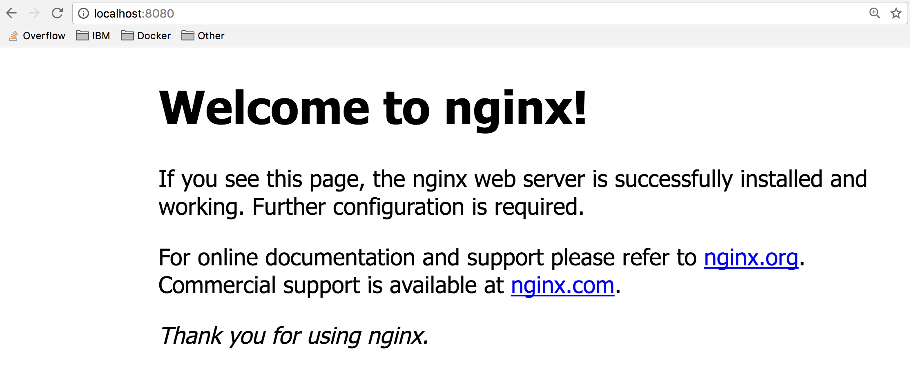
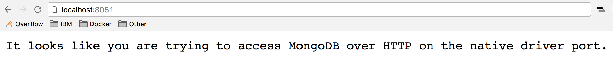

Lab 1 - Running Your First Container
Step 2: Run Multiple Containers
Explore the Docker Hub
The Docker Hub is the public central registry for Docker images. Anyone can share images here publicly. The Docker Hub contains community images, images from verified publishers and official images from Docker.
When searching for images you will find filters for Verified Publisher images and Official images which include content that has been verified and scanned for security vulnerabilities by Docker. Go one step further and search for Certified images, that are deemed enterprise-ready and are tested with Docker Enterprise Edition product. It is important to avoid using unverified community content from the Docker Store when developing your own images that are intended to be deployed into the production environment. These unverified images may contain security vulnerabilities or possibly even malicious software.
In Step 2 of this lab, we will start a couple of containers using some verified images from the Docker Store: nginx web server, and mongo database.
Run an Nginx server
Let's run a container using the official Nginx image from the Docker Store.
$ docker container run --detach --publish 8080:80 --name nginx nginx Unable to find image 'nginx:latest' locally latest: Pulling from library/nginx 36a46ebd5019: Pull complete 57168433389f: Pull complete 332ec8285c50: Pull complete Digest: sha256:c15f1fb8fd55c60c72f940a76da76a5fccce2fefa0dd9b17967b9e40b0355316 Status: Downloaded newer image for nginx:latest 5e1bf0e6b926bd73a66f98b3cbe23d04189c16a43d55dd46b8486359f6fdf048We are using a couple of new flags here. The
--detachflag will run this container in the background. Thepublishflag publishes port 80 in the container (the default port for nginx), via port 8080 on our host. Remember that the NET namespace gives processes of the container their own network stack. The--publishflag is a feature that allows us to expose networking through the container onto the host.How do you know port 80 is the default port for nginx? Because it is listed in the documentation on the Docker Store. In general, the documentation for the verified images is very good, and you will want to refer to them when running containers using those images.
We are also specifying the
--nameflag, which names the container. Every container has a name, if you don't specify one, Docker will randomly assign one for you. Specifying your own name makes it easier to run subsequent commands on your container since you can reference the name instead of the id of the container. For example:docker container inspect nginxinstead ofdocker container inspect 5e1.Since this is the first time you are running the nginx container, it will pull down the nginx image from the Docker Store. Subsequent containers created from the Nginx image will use the existing image located on your host.
Nginx is a lightweight web server. You can access it on port 8080 on your localhost.
Access the nginx server on http://localhost:8080. If you are using the cloud shell, expand the eye icon on the upper right for the Port to preview menu and select
8080.
Run a mongo DB server
Now, run a mongoDB server. We will use the official mongoDB image from the Docker Store. Instead of using the
latesttag (which is the default if no tag is specified), we will use a specific version of the mongo image: 3.4.$ docker container run --detach --publish 8081:27017 --name mongo mongo:3.4 Unable to find image 'mongo:3.4' locally 3.4: Pulling from library/mongo d13d02fa248d: Already exists bc8e2652ce92: Pull complete 3cc856886986: Pull complete c319e9ec4517: Pull complete b4cbf8808f94: Pull complete cb98a53e6676: Pull complete f0485050cd8a: Pull complete ac36cdc414b3: Pull complete 61814e3c487b: Pull complete 523a9f1da6b9: Pull complete 3b4beaef77a2: Pull complete Digest: sha256:d13c897516e497e898c229e2467f4953314b63e48d4990d3215d876ef9d1fc7c Status: Downloaded newer image for mongo:3.4 d8f614a4969fb1229f538e171850512f10f490cb1a96fca27e4aa89ac082eba5Again, since this is the first time we are running a mongo container, we will pull down the mongo image from the Docker Store. We are using the
--publishflag to expose the 27017 mongo port on our host. We have to use a port other than 8080 for the host mapping, since that port is already exposed on our host. Again refer to the official docs on the Docker Store to get more details about using the mongo image.Access http://localhost:8081 to see some output from mongo. If you are using play-with-docker, look for the
8080link near the top of the page.
Check your running containers with
docker container ls$ docker container ls CONTAINER ID IMAGE COMMAND CREATED STATUS PORTS NAMES d6777df89fea nginx "nginx -g 'daemon ..." Less than a second ago Up 2 seconds 0.0.0.0:8080->80/tcp nginx ead80a0db505 mongo "docker-entrypoint..." 17 seconds ago Up 19 seconds 0.0.0.0:8081->27017/tcp mongo af549dccd5cf ubuntu "top" 5 minutes ago Up 5 minutes priceless_keplerYou should see that you have an Nginx web server container, and a MongoDB container running on your host. Note that we have not configured these containers to talk to each other.
You can see the "nginx" and "mongo" names that we gave to our containers, and the random name (in my case "priceless_kepler") that was generated for the ubuntu container. You can also see that the port mappings that we specified with the
--publishflag. For more details information on these running containers you can use thedocker container inspect [container id]command.One thing you might notice is that the mongo container is running the
docker-entrypointcommand. This is the name of the executable that is run when the container is started. The mongo image requires some prior configuration before kicking off the DB process. You can see exactly what the script does by looking at it on github. Typically, you can find the link to the github source from the image description page on the Docker Store website.Containers are self-contained and isolated, which means we can avoid potential conflicts between containers with different system or runtime dependencies. For example: deploying an app that uses Java 7 and another app that uses Java 8 on the same host. Or running multiple nginx containers that all have port 80 as their default listening ports (if exposing on the host using the
--publishflag, the ports selected for the host will need to be unique). Isolation benefits are possible because of Linux Namespaces.Note: You didn't have to install anything on your host (other than Docker) to run these processes! Each container includes the dependencies that it needs within the container, so you don't need to install anything on your host directly.
Running multiple containers on the same host gives us the ability to fully utilize the resources (cpu, memory, etc) available on single host. This can result in huge cost savings for an enterprise.
While running images directly from the Docker Store can be useful at times, it is more useful to create custom images, and refer to official images as the starting point for these images. We will dive into building our own custom images in Lab 2.